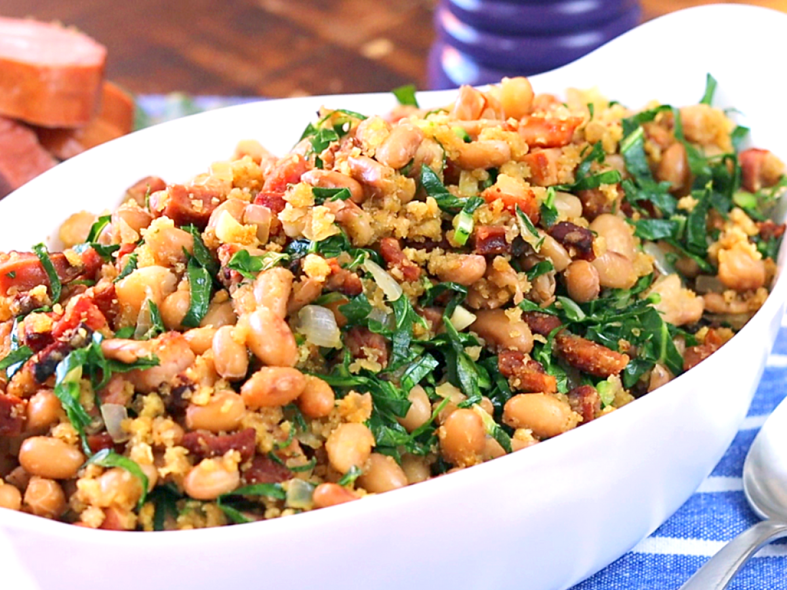

Feijão Tropeiro

Description
-
150 g of chopped bacon
-
250 g chopped sausage calabresa
-
1 cup (coffee) olive oil
-
2 onions chopped
-
6 cloves of garlic crushed
-
500 g cooked and drained beans
-
1 cube of bacon broth
-
4 fried eggs whole and chopped
-
smell-green to taste
-
1 and 1/2 tablespoon raw cassava flour
-
salt and pepper to taste